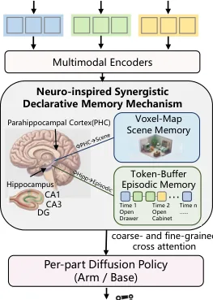
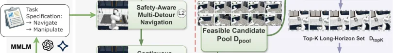

💡速记层 · 思想 / 逻辑 / 方法
默认读完就走的一层——只讲思想、逻辑、方法；效果只作验证。要核对原文/钻细节再看下面的「深读层」。
- 移动操作是非马尔可夫问题：两帧视觉上相似的状态（"正要开柜" vs "柜已开"）需要历史记忆才能区分正确行为。
- 人脑靠海马旁回（PHC）存空间语义、海马体存时序经历来解决这类问题——这两种记忆是互补的。
- 场景记忆（Scene Memory）维护跨 episode 累积的 voxel 3D feature map，提供稳定的空间语义背景（慢变）；情节记忆（Episodic Memory）维护固定长度 FIFO token buffer，提供细粒度时序进度（快变）。
- 两类记忆用粗粒度（coarse）+ 细粒度（fine）cross-attention 分别融合，避免互相干扰；融合后的表示 \(\mathbf{H}_t\) 条件化 diffusion policy。
- 底盘（base）和机械臂（arm）用独立去噪器（per-part diffusion）解耦建模，同时生成协调动作。
在 RoboCasa 仿真上，EchoVLA 的移动操作 SR（0.31）超过强基线 π0.5（0.20）+0.11；消融表明去掉任一记忆模块（EM 或 SM）都显著掉点，证实双记忆互补而非冗余。真机 TidyBot++ 平台 7m×7m 场地，均值 SR 0.44 超过 π0.5（0.33）。
想看具体数字（点开）
- 仿真 Manipulation/Navigation 平均 SR：EchoVLA 0.52 vs. π0.5 0.32。
- 仿真 Mobile Manipulation 平均 SR：EchoVLA 0.31 vs. π0.5 0.20 vs. WB-VIMA 0.11。
- 真机 6 任务均值：EchoVLA 0.44，π0.5 0.33，Diffusion Policy 0.32。
- 最难长程任务 EnP（362 帧跨房间）：EchoVLA 0.10，π0.5 0.00——仅 EchoVLA 能完成。
- 消融（Mobile PnPC2S）：去 SM → SR 0.09；去 EM → SR 0.14；完整 → 0.17。
- 情节记忆窗口 L=8、更新阈值 τ=0.5 为最优超参。
- MoMani：7889 仿真 + 1200 真机 episodes，覆盖 4 仿真 + 6 真机任务。
Track A（移动操作 VLA）直接命中：本文正面解决"VLA 驱动移动操作的记忆缺失"问题，提供了场景记忆 + 情节记忆 + per-part diffusion 的完整架构，以及 MoMani 数据集生成流程，与人形机器人长程任务研究高度相关。Track B（足式先进算法）不直接相关——本文不涉及 locomotion 控制算法。
◆核心观点 · 证据
每条 = 中文论点 + 📍页/节 + 🔤逐字原文(Ctrl-F 锚点) + 🀄译文 + 💡解读。
existing VLAs are mostly confined to short-horizon, table-top manipulation, lacking the memory and reasoning capability required for mobile manipulation, where agents must coordinate navigation and manipulation under changing spatial contexts.
We focus on non-Markovian tasks— two visually similar frames may correspond to completely different progress states (e.g., "cabinet opened" vs. "about to open"). Thus, a memory mechanism is needed.

EchoVLA incorporates a synergistic declarative memory inspired by the human brain, consisting of a scene memory that maintains a collection of spatial–semantic maps and an episodic memory that stores task-level experiences with multimodal contextual features.
EchoVLA retrieves from scene memory and episodic memory with separate coarse- and fine-grained cross attention, and fuses them to guide per-part diffusion policies (arm/base).

the memory applies a discrepancy-driven rule: the current voxel features V3D t are compared with a reconstruction generated from the existing memory. Regions whose reconstruction error exceeds a threshold are updated with the new PointAttn features, while unchanged areas retain their previous values.
By storing the original encoded tokens instead of compressing them into abstract summaries, the model preserves detailed temporal cues that are essential for resolving non-Markov ambiguities and maintaining consistent task execution across visually similar states.

we further introduce MoMani, an automated benchmark that generates expert-level trajectories via MLLM-guided planning and feedback-based refinement. Compared with existing mobile manipulation benchmarks—which remain limited in scale and task diversity—as well as datasets like RoboTwin 2.0 and RoboCasa, MoMani offers richer task coverage and collects real-robot demonstrations on a holonomic mobile platform to support large scale training.
EchoVLA maintains the highest success rate (0.31) in Mobile Manipulation tasks, outperforming all other methods. This highlights the method's effectiveness in handling coordinated base–arm motion, long-range navigation, and sequential manipulation tasks.
The ablation rows in Table 3 show that disabling either EM or SM leads to substantial degradation, and removing both RGB or PC signals further compounds these effects. Overall, the results highlight that observation diversity (RGB + PC) and hierarchical memory (EM + SM) are both essential for robust performance in manipulation and mobile manipulation tasks in RoboCasa.
EchoVLA achieves a mean success rate of 0.44, surpassing Diffusion Policy (0.32). EchoVLA excels in long-horizon precision, achieving 50% SR on RK while baselines fail (10%) due to memory drift.
performance drops in OR due to dynamic occlusion. As the fridge door opens, rapidly changing geometry degrades EchoVLA's explicit 3D Scene Memory. Conversely, baselines relying on implicit "muscle memory" are more robust to such blind spots where explicit geometry fails.
⎘开源状态 · 实时检查结果（截至 2026-06）
经 WebSearch + arXiv HTML 页面实时核查，目前未发现任何公开代码或权重发布。
- 代码
- 未开源 — arXiv 页面及 GitHub 无对应仓库
- 模型权重
- 未发布 — 无 HuggingFace 或其他托管链接
- MoMani 数据集
- 未发布 — 论文中未提供下载链接
- TidyBot++ 平台
- 已开源 — 硬件平台本身由 [47] 开源，非本文贡献
- 论文
- 公开 — arXiv:2511.18112（v2: 2026-03-06）
No direct links to code repositories, project pages, datasets, weights, or HuggingFace explicitly mentioned on the arXiv page.
⚖批判 · 评级
问题定位精准：明确将移动操作的核心难点归结为非马尔可夫性，并用神经科学类比提供了有据可查的双记忆设计动机。对 Track A 直接可借鉴：scene memory（voxel map + 差异更新）和 episodic memory（FIFO token buffer）的工程细节清晰，可复现；MoMani 的自动生成流水线（MLLM 引导 + Hard Quality Gates）对构建移动操作数据集有参考价值。失败分析（OR 任务动态遮挡）诚实，指出了改进方向。
规模局限：真机实验只有 20 次独立试验/任务，6 个任务，1 个机器人平台（TidyBot++），统计显著性有限。未开源：代码和数据不可用，重现难度大。计算开销未量化：voxel map 构建 + 实时差异检测 + 双重交叉注意力的推理延迟在论文中未报告，移动操作对实时性要求高。场景记忆假设强：依赖高质量深度流和精确位姿估计，累积里程计漂移会导致"ghosting"，在动态场景下更明显，论文已承认但未解决。π0.5 基线设置存疑：π0.5 是移动操作专门设计的强基线，但论文未说明 π0.5 是否使用了同等的 MoMani 数据训练。
综合评级：★★★ Important
在 Track A 框架内是填补记忆空缺的重要工作；双记忆架构设计思路扎实，实验对比充分；但真机实验规模小、未开源、计算开销不明，降低一档至 Important（而非 Breakthrough）。